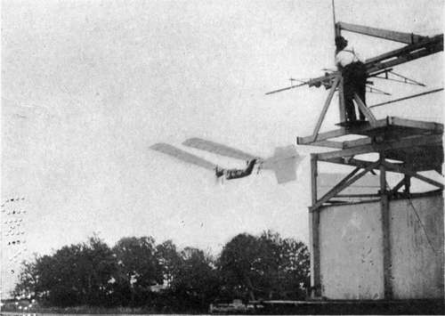
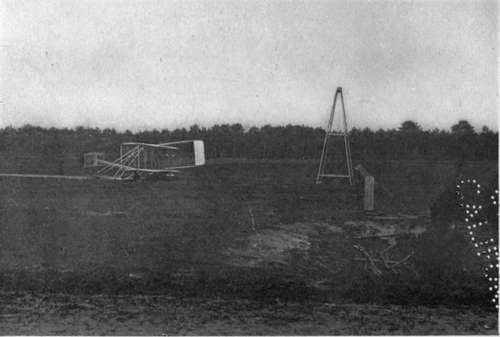

The Plane In The Air. Continued
Description
This section is from the book "The New Art Of Flying", by Waldemar Kaempffert. Also available from Amazon: The New Art of Flying.
The Plane In The Air. Continued
Fig. 9. The plane B B is at a greater angle of incidence than the plane A A. If its speed be 10 miles an hour, it will, while travelling horizontally 25 feet, overcome its tendency to fall to D. If its speed be 20 miles an hour, it will have 50 feet to travel while overcoming its tendency to fall to E. Unless the angle of B B, therefore, were decreased to that of A A for the greater speed, the plane would not move horizontally but would ascend.
In most forms of locomotion, increased speed is obtained at the expense of power. When you run, you expend more energy than when you walk. A locomotive driven at high speed utilises more power than at low speed. Paradoxically enough, the aeroplane follows no such rule. The late Professor Langley discovered that the higher the speed of an aeroplane, the less power is required to drive it. Langley was considering surfaces only. Wires and struts must also be considered, and their resistance (increasing with the square of the velocity) is such that, as Herring has pointed out, flight without motor is impossible on account of the resistance offered by wires alone. Theoretically at least, it seemed to Langley that a speed could be reached where the power received would be nil. The Wrights and other aviators maintain, however, that there is a close limit to this economy of power with accelerated speed. The early experiments of Langley, Maxim and Chanute seemed to show that at high speed increased lifting power is obtained, but how much the increase may be not all the experimenters agree. Contrary-to the early experimenters, the Wright Brothers maintain that there is no practical advantage in increasing speed to obtain increased lifting power. High speed renders it possible to reduce the size and weight of the machine, which in turn means a reduction in atmospheric resistance.
The first glimpse of a flying-machine in the air is a disappointment, not because the flying-machine really flies, but because it apparently flies so slowly. The speed appears less than it really is, and it is only when it is accurately measured that it reaches the hoped-for figure. The speed of many of the early biplanes was not much above thirty miles an hour, and most of the modern biplanes probably do not exceed forty miles. Monoplanes now travel often at a speed of not less than sixty miles. Many of the Blériot monoplanes make considerably over seventy miles an hour on a straight line. At Reims, in 1910, over seventy miles an hour was attained. It is evident that in the near future eighty miles an hour on a straight course is well within the bounds of probability.
Fig. 11. Langley's model aerodrome photographed immediately after a launch.
Photograph by Smithsonian Institution.
In an aeroplane speed is of more importance than any other vehicle, because the aeroplane is far more affected by the wind. A boat, to be sure, is affected by both tide and wind, but not to such an extent as the aeroplane. A strong tide runs only about two knots, while the speed of a fast boat is some ten times this, so that her speed is reduced only ten per cent when running against the tide. An aeroplane, however, is very much more influenced, simply because an ordinary breeze has a velocity of fifteen miles an hour, a strong wind thirty to forty miles an hour, and a gale, sixty miles an hour. The aeroplane, in order to be a serviceable vehicle of sport, must be able to make good speed against a thirty-mile wind. In other words, it should be able to obtain a velocity of sixty or seventy miles an hour, under favourable conditions. Such fast flying, however, complicates the problem of starting and alighting. Landing at high speed is especially dangerous. As long as the method of alighting is what it is now, that is, as long as the machine runs along the ground for some distance, it can hardly be safe to land at speeds in excess of those used at present. It is evident, therefore, that it may be necessary to devise a machine which will fly over a considerable range of speed, so that it can be slowed down before landing. The minimum speed at which an aeroplane will fly is dependent chiefly on the ratio of wing surface to weight. Therefore, to fly slowly we must have large wings in proportion to the weight. Small wings, on the other hand, give high speed, and the small wings on Blériot and Wright racers seem to be very small indeed.
In order that the aeroplane may have a variable speed, it must either have large wings, so designed that they can be driven fast without, resistance, or else we must have some means of reducing the surface of the wings in the air. In the former case, the angle of incidence of the wings is reduced, which would seem to be at least theoretically obtainable, whatever may be the difficulties in making the curves of the wings suitable for various speeds.
Reefing the wing surfaces is a still better method of obtaining variable speeds, but the practical difficulties are formidable. Furling a wing when travelling at forty miles an hour in the air can hardly be easy. Taking in sail in a gale of wind on a boat has its difficulties, and an aeroplane travels at the speed of a gale. For all that, we find that attempts are made, even now, to build machines on this principle.
Before we can advance much farther in aeroplane construction we must conduct more systematic investigations of various kinds of supporting surfaces. Several laboratories are now engaged in such researches, but the results of their labours will hardly be available for some years to come.
It is the general practice of ship-builders to test new forms of hulls by towing models of a few yards in length through the water and by measuring the resistance opposed to their motion. No large ocean steamer is now constructed without such preliminary experiments. Tests with aeroplane models are still more necessary, because in the air we are, as yet, more or less inexperienced. In both cases one of the chief objects of study is the total resistance to motion, and the discovery of the form which will reduce this resistance to the lowest possible point. Other important questions concern the distribution of pressure and skin friction in their dependence upon the form and character of surface. The investigation of stability and steering qualities also requires experiments with models, which may likewise give interesting information on the lifting power or kite action of an aeroplane when inclined to the horizontal. It is necessary to study thoroughly the magnitude and direction of the resultant force on single surfaces of various forms, on combinations of surfaces, and finally on complete aeroplanes, as well as the stability and steering qualities of these combinations. It is easier and cheaper to learn from models all that they can teach us than to make the experiments with large and expensive craft, which has been the practice in the past. It is a question, however, how far the results obtained from models can be applied to the large vessels. Even small models of ships' hulls, which are tested in towing tanks, do not give absolute results. In aeroplanes, the method may be still more untrustworthy because the aerial craft is completely surrounded by the medium through which it travels and because the carriage generally creates more disturbance in the air than the model, a disturbance sufficiently great to make exact measurements impossible. By substituting for the towing carriage a cord wound on a windlass, this objection is removed, but it remains very difficult to distinguish sharply between the comparatively small air resistances and the great force of inertia of the heavy model. M. Eiffel has made some excellent experiments with bodies freely falling through the air. The method frequently employed of carrying the model around in a circle by means of a long rotating arm, or on a whirling table, is open to the objection that the model is always moving in air which has been disturbed by its last passage. There is still a third method, which consists in maintaining the model at rest in a current of air produced, for example, by a blower. The mutual action between the model and the air is exactly as in the former system, if the condition of the moving air before it strikes the model is as uniform as that of still air. The trustworthiness of results obtained by this method depends, therefore, upon obtaining a uniform current free from eddies, which end can be attained by the employment of various appliances. When a uniform current has been secured, the advantages of this method are great and obvious. The duration of the experiment is unlimited, and the model can be attached to its support much more easily and securely than if it were in motion. Furthermore, the difficulties produced by the acceleration and inertia of the model on a measuring apparatus are here avoided. The model is continuously in sight, so that any irregularities can be at once detected. This system has been adopted in the Goettingen Experimental Institute, planned and directed by Professor Prandtl.
Fig. 13. Starting derrick and rail of the Wright Brothers. The machine is about to be hauled up on the rails.
Photograph by Edwin Levick.
Continue to: